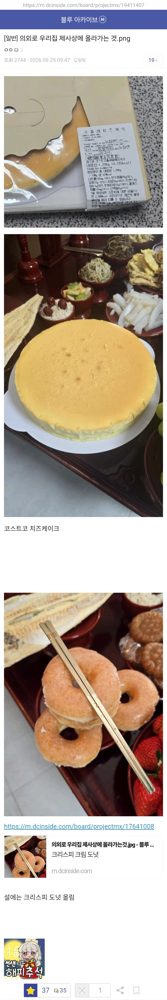

요즘 제사상에 올라가는 떡
댓글
우리집 대대로 술 못마셔서 오렌지주스로 함..
이거 존나 웃긴데 ㅋㅋㅋㅋㅋㅋㅋㅋㅋㅋㅋㅋㅋㅋㅋㅋㅋㅋㅋㅋㅋㅋ
ㅋㅋㅋㅋㅋ
식혜도 아니고 오렌지주스ㅋㅋㅋㅋ
델몬트~~
너네집도??ㅋㅋㅋㅋ
우리집도 대대로 술 못마셔서 쿨피스로 함ㅋㅋㅋㅋㅋ
같은점 = 폭발적인 칼로리
요즘은 나도 저렇게 오만과자 사서 다 올린다. 두쫀쿠, 버터떡, 이번 차례상엔 타르트 5종이랑 컵케이크 올렸지 .. 다들 좋아함
저거 밑에 보면 초코도넛도 있음
할아버지 코크신가
편식하지말고 무래이~~
현대음식도 드셔보셔야지
저 집은 밥 위에 대추를 꽂네. 첨 본다.
난 테라로사 레몬치즈케잌 한조각만 올려달랠거임 ㅎ
난 그냥 전통 제사 음식이 아니라 좋아하는 맛있는 음식 차려놓고 고인에대한 이야기 나누는게 올바른 제사문화 방향성이라고 생각해서 굳이 제사를 지낼거면 이런식으로 바뀌는게 너무 바람직한거같음
굳이 또 여기에 올바른 바람직 같은 평가 메기지 말고 각자 하고싶은데로 좀 하자
조상님도 두쫀쿠 한입 하시면
이게 ㄹㅇ맛도리다 하심
생전에 좋아하시는거 올리는게 맞지